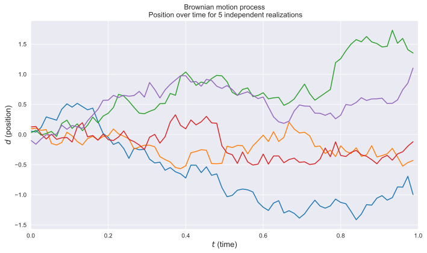
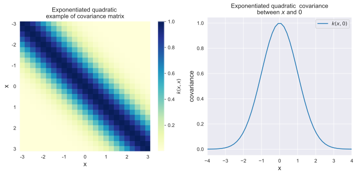
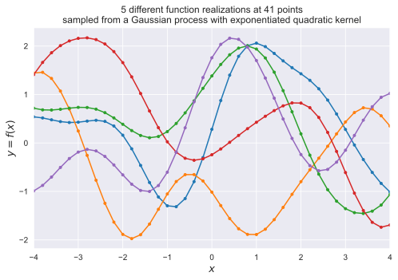
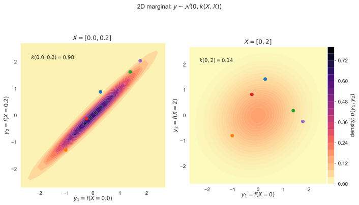
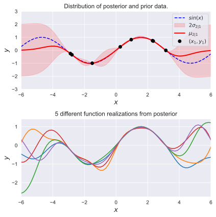

Lecture 11 Examples – Gaussian process and regression#
Here is the copied and modified example from https://peterroelants.github.io/posts/gaussian-process-tutorial/
# Imports
%matplotlib inline
%config InlineBackend.figure_format = 'svg'
import numpy as np
import scipy
import matplotlib
import matplotlib.pyplot as plt
from matplotlib import cm
from mpl_toolkits.axes_grid1 import make_axes_locatable
import matplotlib.gridspec as gridspec
import seaborn as sns
# Set matplotlib and seaborn plotting style
sns.set_style('darkgrid')
np.random.seed(42)
#
Five different paths of Brownian motions (random)#
each path is illustrated with a different color.
# 1D simulation of the Brownian motion process
total_time = 1
nb_steps = 75
delta_t = total_time / nb_steps
nb_processes = 5 # Simulate 5 different motions
mean = 0. # Mean of each movement
stdev = np.sqrt(delta_t) # Standard deviation of each movement
# Simulate the brownian motions in a 1D space by cumulatively
# making a new movement delta_d
distances = np.cumsum(
# Move randomly from current location to N(0, delta_t)
np.random.normal(
mean, stdev, (nb_processes, nb_steps)),
axis=1)
plt.figure(figsize=(10, 6))
# Make the plots
t = np.arange(0, total_time, delta_t)
for i in range(nb_processes):
plt.plot(t, distances[i,:])
plt.title((
'Brownian motion process\n '
'Position over time for 5 independent realizations'))
plt.xlabel('$t$ (time)', fontsize=13)
plt.ylabel('$d$ (position)', fontsize=13)
plt.xlim([-0, 1])
plt.tight_layout()
plt.show()

A Gaussian process is defined by a mean and covariance function#
Let’s assume mean zero Gaussian
Gaussian RV: Standard deviation
Gaussian Random Vector: defined by covariance structure
Gaussian process: covairnace function
1, Define the exponentiated quadratic#
def exponentiated_quadratic(xa, xb):
"""Exponentiated quadratic with σ=1"""
# L2 distance (Squared Euclidian)
sq_norm = -0.5 * scipy.spatial.distance.cdist(xa, xb, 'sqeuclidean')
return np.exp(sq_norm)
2, Illustrate covariance matrix and function#
# Show covariance matrix example from exponentiated quadratic
fig, (ax1, ax2) = plt.subplots(1, 2, figsize=(10, 5))
xlim = (-3, 3)
X = np.expand_dims(np.linspace(*xlim, 25), 1)
Σ = exponentiated_quadratic(X, X)
# Plot covariance matrix
im = ax1.imshow(Σ, cmap=cm.YlGnBu)
cbar = plt.colorbar(
im, ax=ax1, fraction=0.045, pad=0.05)
cbar.ax.set_ylabel('$k(x,x)$', fontsize=10)
ax1.set_title((
'Exponentiated quadratic \n'
'example of covariance matrix'))
ax1.set_xlabel('x', fontsize=13)
ax1.set_ylabel('x', fontsize=13)
ticks = list(range(xlim[0], xlim[1]+1))
ax1.set_xticks(np.linspace(0, len(X)-1, len(ticks)))
ax1.set_yticks(np.linspace(0, len(X)-1, len(ticks)))
ax1.set_xticklabels(ticks)
ax1.set_yticklabels(ticks)
ax1.grid(False)
# Show covariance with X=0
xlim = (-4, 4)
X = np.expand_dims(np.linspace(*xlim, num=50), 1)
zero = np.array([[0]])
Σ0 = exponentiated_quadratic(X, zero)
# Make the plots
ax2.plot(X[:,0], Σ0[:,0], label='$k(x,0)$')
ax2.set_xlabel('x', fontsize=13)
ax2.set_ylabel('covariance', fontsize=13)
ax2.set_title((
'Exponentiated quadratic covariance\n'
'between $x$ and $0$'))
# ax2.set_ylim([0, 1.1])
ax2.set_xlim(*xlim)
ax2.legend(loc=1)
fig.tight_layout()
plt.show()

3, Random generating the samples#
# Sample from the Gaussian process distribution
nb_of_samples = 41 # Number of points in each function
number_of_functions = 5 # Number of functions to sample
# Independent variable samples
X = np.expand_dims(np.linspace(-4, 4, nb_of_samples), 1)
Σ = exponentiated_quadratic(X, X) # Kernel of data points
# Draw samples from the prior at our data points.
# Assume a mean of 0 for simplicity
ys = np.random.multivariate_normal(
mean=np.zeros(nb_of_samples), cov=Σ,
size=number_of_functions)
4, plot the random samples#
# Plot the sampled functions
plt.figure(figsize=(8, 5))
for i in range(number_of_functions):
plt.plot(X, ys[i], linestyle='-', marker='o', markersize=3)
plt.xlabel('$x$', fontsize=13)
plt.ylabel('$y = f(x)$', fontsize=13)
plt.title((
'5 different function realizations at 41 points\n'
'sampled from a Gaussian process with exponentiated quadratic kernel'))
plt.xlim([-4, 4])
plt.show()

5, Advanced 2D/3D Gaussian fields#
def generate_surface(mean, covariance, surface_resolution):
"""Helper function to generate density surface."""
x1s = np.linspace(-5, 5, num=surface_resolution)
x2s = np.linspace(-5, 5, num=surface_resolution)
x1, x2 = np.meshgrid(x1s, x2s) # Generate grid
pdf = np.zeros((surface_resolution, surface_resolution))
# Fill the cost matrix for each combination of weights
for i in range(surface_resolution):
for j in range(surface_resolution):
pdf[i,j] = scipy.stats.multivariate_normal.pdf(
np.array([x1[i,j], x2[i,j]]),
mean=mean, cov=covariance)
return x1, x2, pdf # x1, x2, pdf(x1,x2)
surface_resolution = 50 # Resolution of the surface to plot
fig = plt.figure(figsize=(10, 6))
gs = gridspec.GridSpec(1, 2)
ax_p1 = plt.subplot(gs[0,0])
ax_p2 = plt.subplot(gs[0,1], sharex=ax_p1, sharey=ax_p1)
# Plot of strong correlation
X_strong = np.array([[0], [0.2]])
μ = np.array([0., 0.])
Σ_strong = exponentiated_quadratic(X_strong, X_strong)
y1, y2, p = generate_surface(μ, Σ_strong, surface_resolution=surface_resolution)
# Plot bivariate distribution
con1 = ax_p1.contourf(y1, y2, p, 25, cmap=cm.magma_r)
ax_p1.set_xlabel(
f'$y_1 = f(X={X_strong[0,0]})$',
fontsize=11, labelpad=0)
ax_p1.set_ylabel(
f'$y_2 = f(X={X_strong[1,0]})$',
fontsize=11)
ax_p1.axis([-2.7, 2.7, -2.7, 2.7])
ax_p1.set_aspect('equal')
ax_p1.text(
-2.3, 2.1,
(f'$k({X_strong[0,0]}, {X_strong[1,0]}) '
f'= {Σ_strong[0,1]:.2f}$'),
fontsize=10)
ax_p1.set_title(
f'$X = [{X_strong[0,0]}, {X_strong[1,0]}]$ ',
fontsize=12)
# Select samples
X_0_index = np.where(np.isclose(X, 0.))
X_02_index = np.where(np.isclose(X, 0.2))
y_strong = ys[:,[X_0_index[0][0], X_02_index[0][0]]]
# Show samples on surface
for i in range(y_strong.shape[0]):
ax_p1.plot(y_strong[i,0], y_strong[i,1], marker='o')
# Plot weak correlation
X_weak = np.array([[0], [2]])
μ = np.array([0., 0.])
Σ_weak = exponentiated_quadratic(X_weak, X_weak)
y1, y2, p = generate_surface(μ, Σ_weak, surface_resolution=surface_resolution)
# Plot bivariate distribution
con2 = ax_p2.contourf(y1, y2, p, 25, cmap=cm.magma_r)
con2.set_cmap(con1.get_cmap())
con2.set_clim(con1.get_clim())
ax_p2.set_xlabel(
f'$y_1 = f(X={X_weak[0,0]})$',
fontsize=11, labelpad=0)
ax_p2.set_ylabel(
f'$y_2 = f(X={X_weak[1,0]})$',
fontsize=11)
ax_p2.set_aspect('equal')
ax_p2.text(
-2.3, 2.1,
(f'$k({X_weak[0,0]}, {X_weak[1,0]}) '
f'= {Σ_weak[0,1]:.2f}$'),
fontsize=10)
ax_p2.set_title(
f'$X = [{X_weak[0,0]}, {X_weak[1,0]}]$',
fontsize=12)
# Add colorbar
divider = make_axes_locatable(ax_p2)
cax = divider.append_axes('right', size='5%', pad=0.02)
cbar = plt.colorbar(con1, ax=ax_p2, cax=cax)
cbar.ax.set_ylabel('density: $p(y_1, y_2)$', fontsize=11)
fig.suptitle('2D marginal: $y \sim \mathcal{N}(0, k(X, X))$')
# Select samples
X_0_index = np.where(np.isclose(X, 0.))
X_2_index = np.where(np.isclose(X, 2.))
y_weak = ys[:,[X_0_index[0][0], X_2_index[0][0]]]
# Show samples on surface
for i in range(y_weak.shape[0]):
ax_p2.plot(y_weak[i,0], y_weak[i,1], marker='o')
plt.tight_layout()
plt.show()

Part II: Gaussian process for regression#
Some of them are probably related to the time series analysis for the last part of this course
2.1, Define Gaussian process posterior#
# Gaussian process posterior
def GP(X1, y1, X2, kernel_func):
"""
Calculate the posterior mean and covariance matrix for y2
based on the corresponding input X2, the observations (y1, X1),
and the prior kernel function.
"""
# Kernel of the observations
Σ11 = kernel_func(X1, X1)
# Kernel of observations vs to-predict
Σ12 = kernel_func(X1, X2)
# Solve
solved = scipy.linalg.solve(Σ11, Σ12, assume_a='pos').T
# Compute posterior mean
μ2 = solved @ y1
# Compute the posterior covariance
Σ22 = kernel_func(X2, X2)
Σ2 = Σ22 - (solved @ Σ12)
return μ2, Σ2 # mean, covariance
2.2, Compute the posterior mean and covariance#
# Define the true function that we want to regress on
f_sin = lambda x: (np.sin(x)).flatten()
n1 = 8 # Number of points to condition on (training points)
n2 = 75 # Number of points in posterior (test points)
ny = 5 # Number of functions that will be sampled from the posterior
domain = (-6, 6)
# Sample observations (X1, y1) on the function
X1 = np.random.uniform(domain[0]+2, domain[1]-2, size=(n1, 1))
y1 = f_sin(X1)
# Predict points at uniform spacing to capture function
X2 = np.linspace(domain[0], domain[1], n2).reshape(-1, 1)
# Compute posterior mean and covariance
μ2, Σ2 = GP(X1, y1, X2, exponentiated_quadratic)
# Compute the standard deviation at the test points to be plotted
σ2 = np.sqrt(np.diag(Σ2))
# Draw some samples of the posterior
y2 = np.random.multivariate_normal(mean=μ2, cov=Σ2, size=ny)
2.3, plot the postior distribution and some samples#
fig, (ax1, ax2) = plt.subplots(
nrows=2, ncols=1, figsize=(6, 6))
# Plot the distribution of the function (mean, covariance)
ax1.plot(X2, f_sin(X2), 'b--', label='$sin(x)$')
ax1.fill_between(X2.flat, μ2-2*σ2, μ2+2*σ2, color='red',
alpha=0.15, label='$2 \sigma_{2|1}$')
ax1.plot(X2, μ2, 'r-', lw=2, label='$\mu_{2|1}$')
ax1.plot(X1, y1, 'ko', linewidth=2, label='$(x_1, y_1)$')
ax1.set_xlabel('$x$', fontsize=13)
ax1.set_ylabel('$y$', fontsize=13)
ax1.set_title('Distribution of posterior and prior data.')
ax1.axis([domain[0], domain[1], -3, 3])
ax1.legend()
# Plot some samples from this function
ax2.plot(X2, y2.T, '-')
ax2.set_xlabel('$x$', fontsize=13)
ax2.set_ylabel('$y$', fontsize=13)
ax2.set_title('5 different function realizations from posterior')
ax1.axis([domain[0], domain[1], -3, 3])
ax2.set_xlim([-6, 6])
plt.tight_layout()
plt.show()

Part III: Gaussian process for regression - Noisy observations#
3.1, Gaussian process posterior with noisy obeservations#
# Gaussian process posterior with noisy obeservations
def GP_noise(X1, y1, X2, kernel_func, σ_noise):
"""
Calculate the posterior mean and covariance matrix for y2
based on the corresponding input X2, the noisy observations
(y1, X1), and the prior kernel function.
"""
# Kernel of the noisy observations
Σ11 = kernel_func(X1, X1) + ((σ_noise ** 2) * np.eye(n1))
# Kernel of observations vs to-predict
Σ12 = kernel_func(X1, X2)
# Solve
solved = scipy.linalg.solve(Σ11, Σ12, assume_a='pos').T
# Compute posterior mean
μ2 = solved @ y1
# Compute the posterior covariance
Σ22 = kernel_func(X2, X2)
Σ2 = Σ22 - (solved @ Σ12)
return μ2, Σ2 # mean, covariance
3.2, Plot the postior distribution and some samples#
fig, (ax1, ax2) = plt.subplots(
nrows=2, ncols=1, figsize=(6, 6))
# Plot the distribution of the function (mean, covariance)
ax1.plot(X2, f_sin(X2), 'b--', label='$sin(x)$')
ax1.fill_between(X2.flat, μ2-2*σ2, μ2+2*σ2, color='red',
alpha=0.15, label='$2\sigma_{2|1}$')
ax1.plot(X2, μ2, 'r-', lw=2, label='$\mu_{2|1}$')
ax1.plot(X1, y1, 'ko', linewidth=2, label='$(x_1, y_1)$')
ax1.set_xlabel('$x$', fontsize=13)
ax1.set_ylabel('$y$', fontsize=13)
ax1.set_title('Distribution of posterior and prior data')
ax1.axis([domain[0], domain[1], -3, 3])
ax1.legend()
# Plot some samples from this function
ax2.plot(X2, y2.T, '-')
ax2.set_xlabel('$x$', fontsize=13)
ax2.set_ylabel('$y$', fontsize=13)
ax2.set_title('5 different function realizations from posterior')
ax1.axis([domain[0], domain[1], -3, 3])
ax2.set_xlim([-6, 6])
plt.tight_layout()
plt.show()